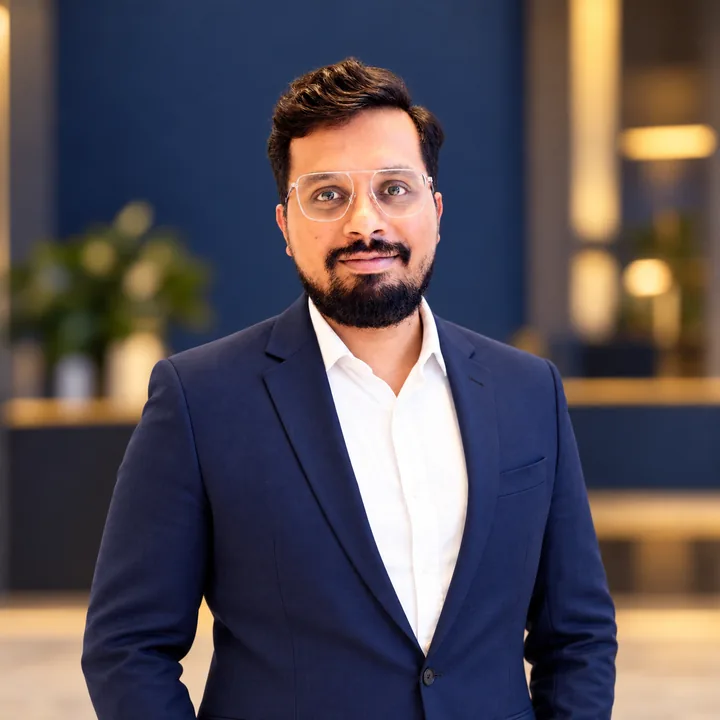

FOUNDING PARTNER · IP ATTORNEY · ADVOCATE · PATENT AGENT
Praneetha K Rasbag
Praneetha K Rasbag is a co-founder of PRASA IP, a registered Indian Patent Agent and an Advocate with more than 15 years of experience in intellectual property. Her practice includes patent drafting and prosecution across jurisdictions, strategic portfolio development, patent lifecycle management and advice concerning the protection of technically complex inventions.
Praneetha works closely with inventors, research and development teams, and business leaders to develop intellectual property roadmaps aligned with technical priorities and commercial objectives. She supports clients from early stage invention identification and protection through prosecution and portfolio management across diverse industries.
She regularly conducts intellectual property training programmes within client organisations and has shared her experience at professional forums including IIPSS, IPR Gorilla and WIPF. Her training and speaking work focuses on helping technical and business teams understand patent strategy, invention capture and changes in intellectual property practice.
Before establishing PRASA IP, Praneetha gained experience with multinational and technology organisations including Siemens, Tata Consultancy Services and Log9 Materials, as well as leading intellectual property law firms. This combination of corporate, technology and legal experience informs her practical approach to portfolio strategy and collaboration with research teams.
Selected awards and leadership

FOUNDING PARTNER · IP ATTORNEY · ADVOCATE · PATENT AGENT
Sanath V Madgula
Sanath V Madgula is a founding member of PRASA IP and a registered Indian Patent Agent with more than 12 years of experience. His practice focuses on patent drafting and prosecution, patentability and prior art searches, freedom to operate studies, invalidity and infringement analysis, patent landscapes, evidence of use analysis, FER and office action responses, and international portfolio coordination. He supports clients seeking patent protection in India, the United States, Europe and other jurisdictions.
Sanath works closely with inventors, research teams and business leaders to understand technically complex innovations and develop intellectual property strategies aligned with commercial objectives. His technical experience includes wireless communication, electronics, semiconductors, artificial intelligence, machine learning, mechanical systems, quantum technologies, blockchain, the Internet of Things, automotive technologies and biomedical technologies.
Before establishing PRASA IP, Sanath developed substantial patent experience at leading intellectual property law firms in India. That experience strengthened his approach to technically rigorous drafting, prosecution strategy, prior art analysis and the management of complex patent matters across diverse technology sectors.